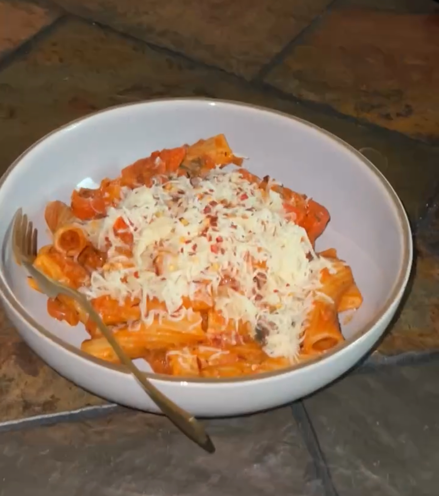

Naim's Secret Pasta

Description
How to make Naim's Secret Pasta to perfection using the ingredients and instructions below
Ingredients:
- Rigotoni Pasta
- Pasta Sauce
- Mushrooms
- Bell Peppers
- Cherry Tomatoes
- Spinach
- Shalot
- Basil
- Oregano
- Salt
- Black Pepper
- Garlic
- Ginger
- Butter
- Medium Aged Cheddar Cheese
Instructions:
- Boil water with a sprinkle of salt
- Add Rigotoni Pasta into water once boiling begins. Cook for 10-15 minutes.
- In a low heated pan, add a tablespoon of butter, salt and black pepper
- Grind up one full Garlic and 2 tablespoons worth of ginger. Thinly dice one Shalot. Then add into pan to simmer.
- Dice half a cup of cherry tomatoes, bell peppers, and mushrooms (each). Then add into pan for about 5 mins.
- Add spinach, one tablespoon of oregano, and full pasta sauce bottle into pan.
- Drain pasta and keep 1/5th of a cup of pasta water. Then add both into pan.
- Add 3 basil leaves and half a cup of shredded Medium Aged Cheddar into pan.
- Cook until cheese is melted and ingredients are mixed together well.
- Serve and Enjoy!